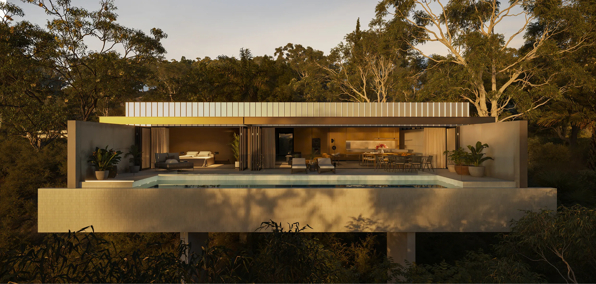

Я Наталія Кириченко, дизайнер інтер’єрів.
Допомагаю створювати не просто гарні, а зручні та продумані до деталей простори. У кожному проєкті живе частинка моєї душі.
Маю профільну вищу освіту та багаторічний досвід роботи в проєктному інституті.
Опираючись на досвід та нормативну базу, я створюю для замовників функціональне та безпечне планування. Окрім краси та естетики, мої замовники отримують зручність.
Мій досвід охоплює не лише житлові будинки та квартири, а й комерційні об’єкти — медичні заклади та підприємства.